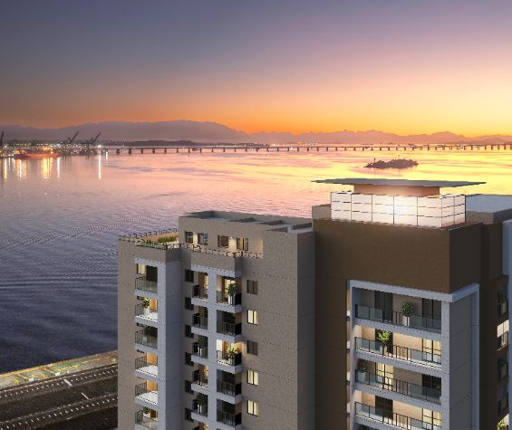
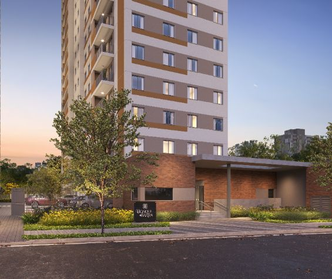
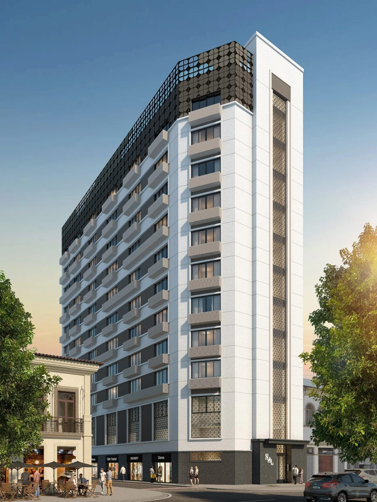

A região portuária é onde eu mais atuo. Studios e apartamentos de 1 a 3 quartos, com Minha Casa Minha Vida e financiamento Caixa — e um corretor que conhece cada quadra da revitalização.
Falar com Paulo CotrimSeleção atual na região. Os valores são de referência e podem mudar por unidade e condição — confirme a tabela oficial atualizada comigo antes de decidir.



Eu faço sua análise inicial de crédito e monto a simulação do financiamento Caixa pela região — tudo online, no WhatsApp. Você entende quanto sai do bolso de verdade antes de decidir.
Sim. Parte dos empreendimentos da região se enquadra no MCMV, dependendo da renda familiar e do perfil. Eu verifico o enquadramento na sua análise inicial.
Há opções a partir de R$ 189.000 (Sal Rio, na Saúde). Entrada e parcelas variam por unidade e condição — confirme a tabela oficial atualizada comigo.
Dá. Análise inicial, simulação, documentos e acompanhamento acontecem online, pelo WhatsApp — sem você sair de casa.
Me chama no WhatsApp com a região e o tipo de imóvel que você quer. Eu cuido do resto.
Falar com Paulo Cotrim